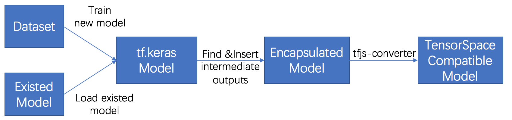

In this chapter, we will introduce how to preprocess a tf.keras model to adapt the multiple intermediate
layer outputs for applying TensorSpace. If you have read the
Keras preprocessing tutorial,
since the close relations between the two APIs, the workflows are very similar.
The sample files that are used for the tutorial are listed below:
filter_center_focus
tf_keras_model.py
filter_center_focus
convert_tf_keras.sh
filter_center_focus
all model files
For the tutorial, we use Python 3.6.5 and the following libraries:
import tensorflow as tf
import numpy as np
It is also required to install
tfjs-converter
(it is a tool from TensorFlow.js):
$ pip install tensorflowjs
If you are new and have no idea about how to train a ML model with tf.keras, we highly recommand you to go
through this
guide
from TensorFlow first.
To preprocess a tf.keras model, make sure you satisfy the followings:

Fig. 1 - Steps to preprocess a tf.keras model
filter_center_focus
1. Train/Load a model
filter_center_focus
2. Insert multiple intermediate outputs
filter_center_focus
3. Save encapsulated model
filter_center_focus
4. Convert to TensorSpace compatible model
The following instruction preprocesses a LeNet with MNIST dataset as an example.
1 Train/Load a model
1.1 Train a new model
Let's train a simple LeNet model to recognize MNIST handwritten digit, if you don't have your model trained yet.
By following the structure of the LeNet,

Fig. 2 - LeNet structure
we can build our model like:
def create_sequential_model():
single_output_model = tf.keras.models.Sequential([
tf.keras.layers.InputLayer(input_shape=(28, 28)),
tf.keras.layers.Reshape((28, 28, 1), input_shape=(28, 28,)),
tf.keras.layers.Convolution2D(
filters=6, kernel_size=5, strides=1,
input_shape=(28, 28, 1), name="conv_1"
),
tf.keras.layers.MaxPool2D(
pool_size=(2, 2), strides=(2, 2), name="maxpool_1"
),
tf.keras.layers.Convolution2D(
filters=16, kernel_size=5, strides=1, name="conv_2"
),
tf.keras.layers.MaxPool2D(
pool_size=(2, 2), strides=(2, 2), name="maxpool_2"
),
tf.keras.layers.Flatten(),
tf.keras.layers.Dense(120, activation=tf.nn.relu, name="dense_1"),
tf.keras.layers.Dense(84, activation=tf.nn.relu, name="dense_2"),
tf.keras.layers.Dense(10, activation=tf.nn.softmax, name="softmax")
])
return single_output_modelwb_sunnyNote:
- filter_center_focus We add the 'name' property for each layers that we want to apply TensorSpace later.
After construction, we can compile and train the model with MNIST data:
mnist = tf.keras.datasets.mnist
(x_train, y_train),(x_test, y_test) = mnist.load_data()
x_train, x_test = x_train / 255.0, x_test / 255.0
model.compile(optimizer='adam',
loss='sparse_categorical_crossentropy',
metrics=['accuracy'])
model.fit(x_train, y_train, epochs=5)After training, we can give it a try by:
input_sample = np.ndarray(shape=(28,28), buffer=np.random.rand(28,28))
input_sample = np.expand_dims(input_sample, axis=0)
print(model.predict(input_sample))Then we have a single array with 10 probabilities:

Fig. 3 - Single list prediction output from trained model
1.2 Load an existed model
For an existed model, we can load the model as:
model = tf.keras.models.load_model(
"PATH_TO_MODEL/model.h5",
custom_objects=None,
compile=True
)Or if the model and weights are stored separately, we can load as:
json_path = "PATH_TO_JSON/model.json"
weight_path = "PATH_TO_WEIGHT/weights.hdf5"
structure = open(json_path, "r")
model = tf.keras.models.model_from_json(
structure
)
model.load_weights(weight_path)Similar to training, we can try to use the model for prediction:
input_sample = np.ndarray(shape=(28,28), buffer=np.random.rand(28,28))
input_sample = np.expand_dims(input_sample, axis=0)
print(model.predict(input_sample))The same length 10 list output:
Fig. 4 - Single list prediction output from loaded model
wb_sunnyNote:
- filter_center_focus Since the we used a random input, the output would be random as well.
2 Insert multiple intermediate outputs
If the output from the previous step is correct, we can find the output is actually a single list
(softmax result) predicted by the model. The array represents the probability of each digits
that the input image could be.
One important purpose of TensorSpace is to show the internal relations among different layers, so we
need to find the way to catch the outputs from intermediate layers during the prediction.
First, we can use summary() command to check the general structure.
We can also loop all layers to find out all layer names.
model.summary()
for layer in model.layers:
print(layer.name)
Fig. 5 - Model summary and layer names
wb_sunnyNote:
filter_center_focus
If a name property is set for a layer,
we can see the name from summary().
filter_center_focus
If a model is loaded from an existed model, the layer name is related to the class names in most cases.
Now, let's put our desired layer names in a list and encapsulate the model with the original input and the new outputs:
output_layer_names = [
"conv_1", "maxpool_1", "conv_2", "maxpool_2",
"dense_1", "dense_2", "softmax"
]
def generate_encapsulate_model_with_output_layer_names(model, output_layer_names):
display_model = tf.keras.models.Model(
inputs=model.input,
outputs=list(map(lambda oln: model.get_layer(oln).output, output_layer_names))
)
return display_modelOr if we want them all, just use:
def generate_encapsulate_model(model):
display_model = tf.keras.models.Model(
inputs=model.input,
# ignore 1st layer (input), since some old models do not have 1st layer as tf.layer
outputs=list(map(lambda layer: layer.output, model.layers[1:]))
)
return display_modelwb_sunnyNote:
- filter_center_focus Do not include the input or input_layer, the model constructed from Model(), could use an input tensor instead of an inputLayer, which causes errors.
- filter_center_focus Double check the layers you want, make sure you put them in a proper order.
Then we have our model with multiple intermediate outputs:
enc_model = generate_encapsulate_model_with_output_layer_names(model, output_layer_names)
# OR
# enc_model = generate_encapsulate_model(model)Now, we can try to predict by the new model:
print(enc_model.predict(input_sample))
Fig. 6 - Multiple list outputs after preprocessing
And we can see the last output is the same as the one from the prediction of the original model.
Fig. 7 - Last list output is the same as the original inferences
You can see the output now is a list which contains all outputs from selected layers.
3 Save encapsulated model
Next, let's dump out the encapsulated model.
wb_sunnyNote:
- filter_center_focus It is required to compile encapsulated model first, though the configurations used for compile will not affect the model.
- filter_center_focus Since we use the model for visualization, we do not use the model for further training.
- filter_center_focus If you want to continue with the encapsulated model, feel free to put proper configurations. Here, we just use adam and sparse_categorical_crossentropy as an example.
enc_model.compile(optimizer='adam',
loss='sparse_categorical_crossentropy',
metrics=['accuracy'])
tf.keras.models.save_model(
gen_dis_model,
"/PATH_TO_NEW_MODEL/enc_model.h5",
overwrite=True
)4 Convert to TensorSpace compatible model
Last, let's convert our multiple output model into a TensorFlow.js compatable model by
tfjs-converter.
The tfjs-converter should be used by the following script:
tensorflowjs_converter \
--input_format=keras \
../models/enc_tf_keras_model.h5 \
../models/json_models/tf_keras
Fig. 8 - Saved model files
wb_sunnyNote:
- filter_center_focus
There are two types of file generated:
- flare One "model.json" file which describe the structure of our model (defined multiple outputs)
- flare Some weight files which contains trained weights. The number of weight files is dependent on the size and structure of the given model.
- filter_center_focus By default, the structure file has the name "model.json" which you can modify later.
- filter_center_focus The weight files are named like "group1-shard1of1" which are used and written within the "model.json" file. Hence we DO NOT suggest to modify the name of weight files, unless really necessary. If you really want to modify them, please modify the content in the ".json" (i.e. "model.json") as well.
- filter_center_focus For more detailed information about tfjs-converter, you can visit tfjs-converter.
If everything looks good, you shall be ready for the next step
- Load a TensorSpace compatible model